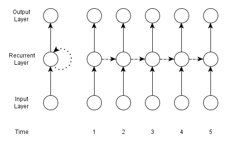

A recurrent neural network (RNN) is designed to take as input a sequence of the form
$\left( \mathbf{x}^{(1)}, \mathbf{x}^{(2)}, \ldots, \mathbf{x}^{(T_i)} \right)$ and map it to an
output sequences of the form
$\left( \mathbf{y}^{(1)}, \mathbf{y}^{(2)}, \ldots, \mathbf{y}^{(T_o)} \right)$. These sequences may be
finite (including a length of 1, i.e. a vector) or countably infinite in length.
Using temporal terminology for simplicity, although RNNs can be applied to non-temporal sequences, a
sequence consists of real-valued vector elements $\mathbf{s}^{(t)}$ that arrive in a discrete sequence
of timesteps indexed by $t$. The time indexing may correspond to some continuous time real-world
process, e.g. frames of a video or audio amplitudes at fixed intervals. However, it may also be
ordinal, with no direct correspondence to duration, or even have no relation to time at all,
e.g. genetic data or natural language. For example, in the sequence of words
"The boy bounced the ball.", $\mathbf{x}^{(1)}=\mathrm{The}$, $\mathbf{x}^{(2)}=\mathrm{boy}$, etc.
These attributes of RNNs lead to three principal differences between RNNs and feedforward ones:
Inputs (and outputs) are not assumed to be independent of one another. Rather, adjacent elements
of the inputs sequences are assumed to have some (possibly causal) interaction with one another
to influence elements elsewhere in the sequence.
Inputs and outputs do not have to be fixed size vectors. Rather, the sequences used as inputs and
outputs can instead be of arbitrary (and differing) length. However, if we take each element $i$
of the input (equivalently output) sequence to be a vector of some size $n_i$, then
$\forall i,j \; n_i = n_j$. That is all vectors in the input sequence must be of size $n$
(and equally all vectors in the output sequence must be of size $m$, although it is not necessary
that $n = m$).
Directed cyclic connections are permitted. However, any edge participating in a cycle must cross
timesteps. That is, a cyclic edge must be one that enables information to flow through time. Cycles
formed in this manner can be of any length.
A RNN is not required to solely contain nodes with recurrent edges, but rather can include both layers
or recurrent and non-recurrent nodes (or layers with both types of node). Assuming layer $l$ in the RNN
contains only nodes with recurrent edges, then a nodes in the layer will contain incoming edges
carrying the output of the nodes in layer $l-1$ from the current timestep and the output of the nodes
in layer $l$ from the previous timestep. Recurrent edges can therefore be seen to both cross timesteps
and stay within a single layer, i.e. a recurrent edge with a node in layer $l$ as its source will have
the 'same' node in layer $l$ as it target (just in the next timestep). An example of a RNN with
recurrent edges can be seen below.
A simple RNN. Dashed lines indicate recurrent edges.
Another way to visualise a RNN is to 'unroll' the network along the timesteps, leading to a network with
no cycles. An example of this can be seen below. This approach makes it simpler to appreciate the
backpropagation process in RNNs, especially when the inter-timestep dependencies are more complex.

An unrolled RNN.
Backpropagation Through Time
The notation required to express the function of a RNN closely follows that of a feedforward network,
with $\mathbf{a}^l$ being the activations
(summed inputs) of the nodes in layer $l$ and $\mathbf{h}^l$ being the outputs of the nodes in
layer $l$. Note that $l \in 0 \ldots L$, with layer 0 being the input layer and layer $L$ being the
output layer. With this notation $\mathbf{x} = \mathbf{h}^0$, i.e. the input is the same as the output
of the first layer, and $\mathbf{y} = \mathbf{h}^L$, i.e. the output of the network is the same as the
output of the final layer. One notation change however is needed to incorporate the idea of a sequence.
Therefore, $\mathbf{a}^{l,(t)}$ and $\mathbf{h}^{l,(t)}$ are the activations and outputs of the nodes
in layer $l$ during timestep $t$.
Consider then a RNN with three layers: input, recurrent hidden and output. The forward pass in this
network, and in any RNN, functions similarly to that in a three layer feedforward network, with the
exception that inputs arrive at the recurrent hidden layer of the RNN from both the previous layer
(i.e. the input layer here) within the timestep and the same layer (i.e. the recurrent hidden layer)
from the previous timestep. If we take an input sequence $\mathbf{x}$ as input to this network, then
$\mathbf{x}^{(t)}_i = \mathbf{h}^{0,(t)}_i$ is the $i$th element of the input vector at timestep $t$,
$\mathbf{a}^{l,(t)}_j$ is the activation of the $j$th node in the $l$th layer at timestep $t$ and
$\mathbf{h}^{l,(t)}_j$ is the output of the same node. The weight matrices can be similarly identified
with $W^l_{ji}$ being the weight on the edge between the $i$th node in layer $l-1$ and the $j$th node
in layer $l$ and $R^l_{ji}$ being the weight on the edge between the $i$th node in the $l$th layer at
timestep $t$ and the $j$th node in the $l$th layer at timestep $t+1$. The recurrent $R$ matrices must
be square as the number of outputs of the recurrent layer does not change between timesteps, while the
$W$ matrices can be rectangular if there are more inputs than outputs. There will be $L$ inter-layer
weight matrices ($W$ matrices) and one $R$ matrix per recurrent layer. As the weight matrices are
shared across timesteps no indication of the timestep is needed. Using this notation equations for
the activations and outputs of nodes in non-recurrent layers are the same as for feedforward networks
(with the addition of a timestep index), while recurrent layer activations and outputs can be
calculated as:
$$
\mathbf{a}^{l,(t)}_j =
\sum_i W^l_{ji} \mathbf{h}^{l-1,(t)}_i + \sum_h R^l_{jh} \mathbf{h}^{l,(t-1)}_h \\
\mathbf{h}^{l,(t)}_j = f_j(\mathbf{a}^{l,(t)}_j)
$$
The complete sequence of activations and outputs of the hidden nodes can then be calculated by
repeatedly applying the equations starting with $t=1$ and continuing until $t=T_i$ (i.e. be sequentially
applying the equations to the input and propagating through time). However, this requires that
$\mathbf{h}^{l,(0)}$ be known for all recurrent layers $l$. In other words, the output of each recurrent
layer before any input is received must be known.
This can be done by initialising all values to 0, but the stability and performance of the RNN can
potentially be improved through using nonzero initial values.
The backward pass in RNNs is generally handled using an approach called backpropagation through time
(BPTT). Like standard backpropagation, BPTT relies on repeated applications of the chain rule. However,
the cost function depends on the nodes in a recurrent layer not only through their influence
on the output layer, but also through their influence on the nodes in the same recurrent layer during
future timesteps. Therefore, the gradient at the input to a recurrent node has to be calculated as:
$$
\begin{align}
\frac{\partial \mathcal{J}}{\partial \mathbf{a}^{l-1,(t)}_i}
& = \frac{\partial \mathcal{J}}{\partial \mathbf{h}^{l-1,(t)}_i}
\frac{\partial \mathbf{h}^{l-1,(t)}_i}{\partial \mathbf{a}^{l-1,(t)}_i} \\
& = \left(
\sum_j \frac{\partial \mathcal{J}}{\partial \mathbf{a}^{l,(t)}_j} W^l_{ji} +
\sum_h \frac{\partial \mathcal{J}}{\partial \mathbf{a}^{l-1,(t+1)}_h} R^l_{hi}
\right)
f'_j(\mathbf{a}^{l-1,(t)}_j)
\end{align}
$$
or equivalently in vector form:
$$
\begin{align}
\frac{\partial \mathcal{J}}{\partial \mathbf{a}^{l-1,(t)}}
& = \frac{\partial \mathcal{J}}{\partial \mathbf{h}^{l-1,(t)}}
\frac{\partial \mathbf{h}^{l-1,(t)}}{\partial \mathbf{a}^{l-1,(t)}} \\
& = \left(
(W^l)^{\mathsf{T}} \frac{\partial \mathcal{J}}{\partial \mathbf{a}^{l,(t)}} +
(R^l)^{\mathsf{T}} \frac{\partial \mathcal{J}}{\partial \mathbf{a}^{l-1,(t+1)}}
\right)
\odot
f'(\mathbf{a}^{l-1,(t)})
\end{align}
$$
The complete sequence of partial derivatives can be calculated starting with $t=T_o$ and applying the
BPTT equations while decrementing $t$ after each application until $t=1$ (noting that
$\frac{\partial \mathcal{J}}{\partial \mathbf{a}^{l,(T_o + 1)}_j} = 0 \; \forall j$ since no error can be
received from beyond the end of the output sequence). Given that the same weights are used at every
timestep, we sum over the entire sequence to get the derivatives with respect to a non-recurrent weight:
$$
\frac{\partial \mathcal{J}}{\partial W^l_{ji}} =
\sum^{T_o}_{t=1} \frac{\partial \mathcal{J}}{\partial \mathbf{a}^{l,(t)}_j}
\frac{\partial \mathbf{a}^{l,(t)}_j}{\partial W^l_{ji}} =
\sum^{T_o}_{t=1} \frac{\partial \mathcal{J}}{\partial \mathbf{a}^{l,(t)}_j} \mathbf{h}^{l-1,(t)}_i
$$
and similarly for a recurrent weight:
$$
\frac{\partial \mathcal{J}}{\partial R^l_{ji}} =
\sum^{T_o}_{t=1} \frac{\partial \mathcal{J}}{\partial \mathbf{a}^{l,(t)}_j}
\frac{\partial \mathbf{a}^{l,(t)}_j}{\partial R^l_{ji}} =
\sum^{T_o}_{t=1} \frac{\partial \mathcal{J}}{\partial \mathbf{a}^{l,(t)}_j} \mathbf{h}^{l,(t-1)}_i
$$
Bidirectional Recurrent Neural Networks
For many sequence labelling tasks it is beneficial to be able to access both past and future timesteps.
However, unidirectional RNNs can only proceed through time from past to future or future to past. This
could potentially be improved by adding a time window of context around the timestep in question (i.e.
look at timesteps $(t-n, \ldots, t-1, t, t+1, \ldots, t+n)$). However, fixed context windows can be
undesirable as the window size requires tuning, and may be different for individual sequences and
potentially for individual timesteps within a sequence. A more elegant solution is the bidirectional
recurrent neural network (BRNN), the basic premise of which is to connect two recurrent neural networks
to the same output layer, but have the input presented forwards to one network and backward to the
other. An unfolded BRNN can be seen below.
An unrolled BRNN.
The forward pass for a BRNN is the same as for a RNN, except that the output layer is not updated until
both the forward and backward recurrent layers have processed the input sequence. Similarly, the
backward pass proceeds the same, except that $\delta$ values for the output layer are fed into the
recurrent layers in opposite directions. Being able to proceed backwards through the input sequence
can be seen to break causality in tasks where the subsequent sequence elements are causally related to
previous ones. In particular, for a task such as forecasting, access to future elements of the sequence
is impossible. However, if the inputs are spatial (rather than temporal) or it is reasonable to believe
that the whole sequence will be available before an output needs to be produced (e.g. translation,
automatic dictation or handwriting recognition), then there is no need to restrict ourselves to
following causality (especially if it is not unidirectional, as is the case with protein structure
prediction).
Vanishing and Exploding Gradients
Learning in RNNs can be especially challenging due to the difficulty of learning dependencies over long
time frames (see e.g. here and
here). A task can be said to have long-range
dependencies if the prediction of the output at time $t$ is dependant on the input at some time
$t' \ll t$. When using gradient-based training with backpropagation this can present problems
as the chain rule requires that the product of gradients be computed to find the derivative of the
cost function with respect to a given parameter. For long-range dependencies this requires computing
the product of many gradients in order to propagate the gradient back to timestep $t'$. As BPTT is in
essence an unfolding of the RNN into a standard (but deep) feedforward network, similar problems
with the gradient appear. If you take a common activation function such as a sigmoid or tanh function,
then the derivative of the function will be no greater than one. As the gradient passes through a
neuron implementing one of these functions the gradient is likely to decrease, and over multiple layers
it becomes likely to dwindle to almost nothing. Alternatively, the gradient can explode and overflow
when conditions are right. This problem is illustrated in the figure below. The sensitivity of the
output to a given input decays with the distance in time between the input and output. One solution
to this problem is to clip the gradient to an acceptable range, e.g. $[-0.1, 0.1]$. Alternatively,
special types of neurons can be employed.
Vanishing Gradient.Dark nodes indicate those neurons that are most sensitive to the input
at timestep $t=1$, with nodes becoming less sensitive as they become lighter (and therefore as
$t' - t$ becomes larger). The sensitivity of the output to the input can be seen to decay with time
as the network 'forgets' the input.